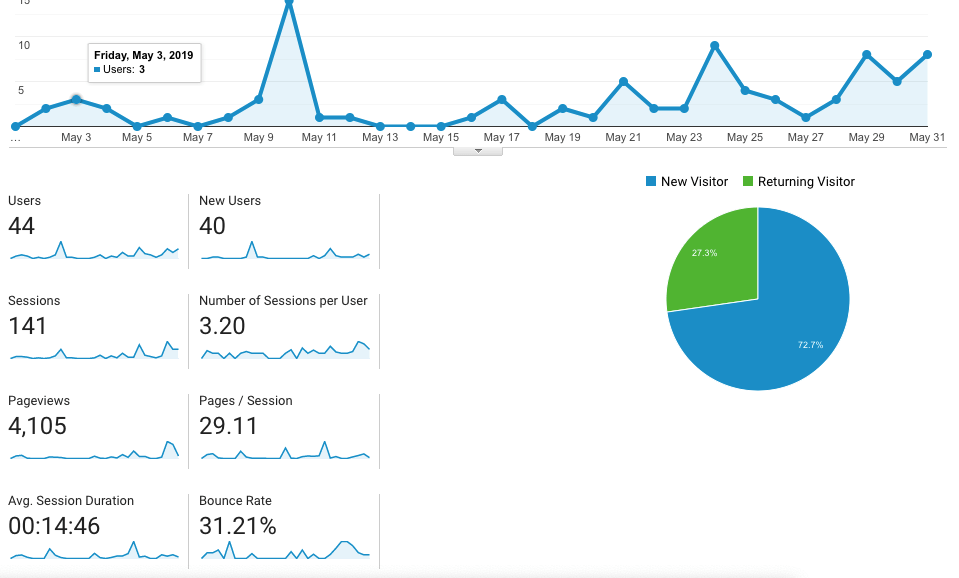
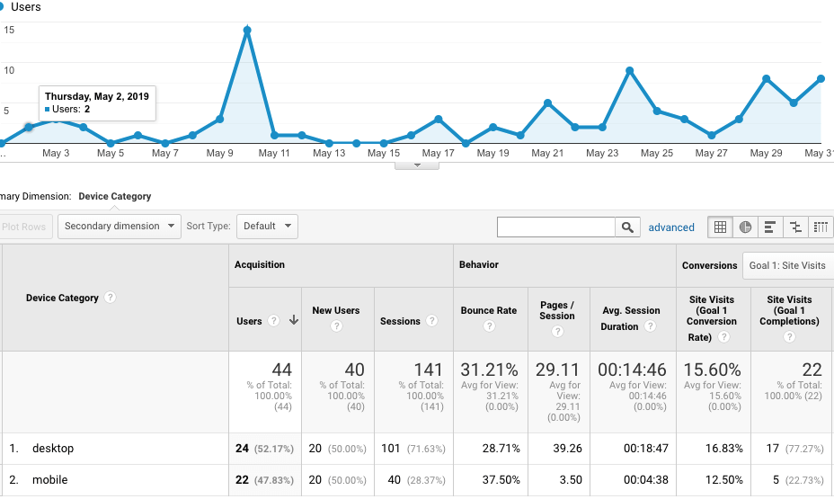
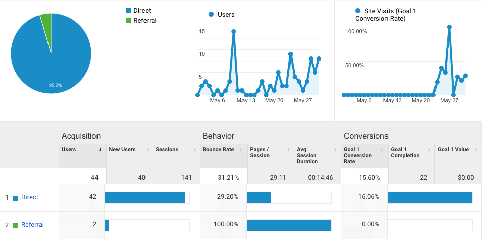
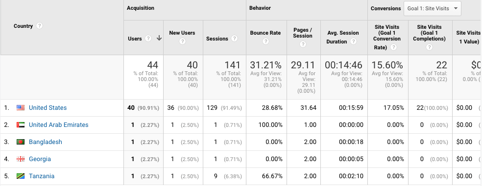
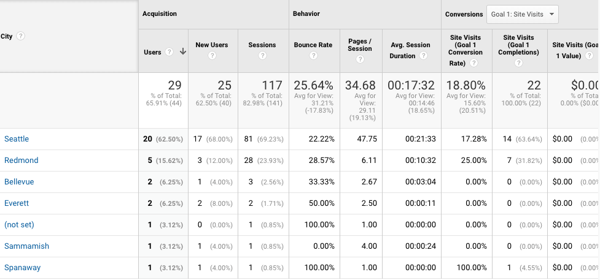
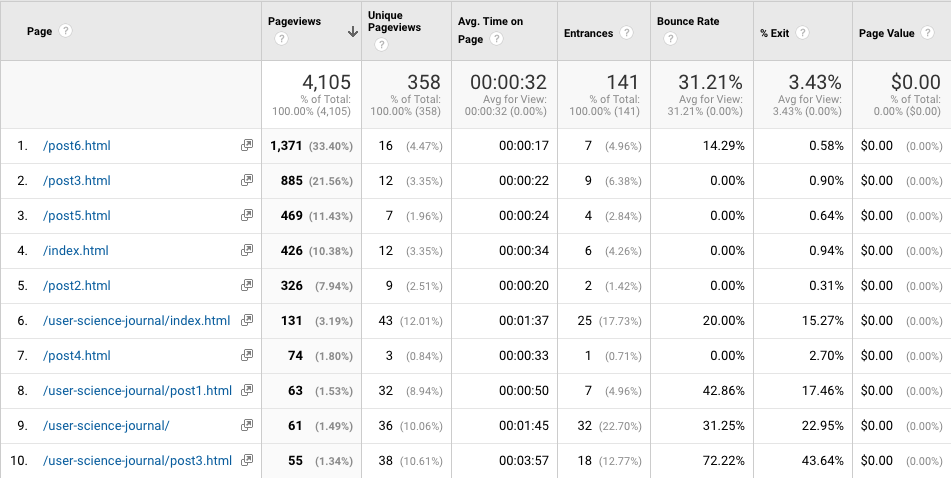

In today's digital marketing world, tools like Google analytics have made it easy for businesses and marketing agencies to reach a broad audience effectively. However, for this week's analysis, I will use GA to track my website "User Science Journal," analyze the data and report my findings.
- What devices are people visiting my website using?
- What is the flow of my visitors on my website?
- Where are my visitors from?
- What will be the source of the traffic to my site?
Predictions
Based on the data GA generate, I can predict that:
- Most visitors will use mobile devices.
- Most traffic will be from classmates in Seattle and around the world.
- The visitors are from Washington.
- My most popular page is going to be the homepage.
Audience Overview Data
The data shown in the image below is for the entire month of May. On days you see the most spikes are most likely the days I had my friends visit my blog.
 GA Overview pageThe chart also shows the number of users that visited my site this period, how long they stayed, the bounce rate etc. Now let's see how my predictions went.
Mobile
I expected the majority of users to use mobile phones to visit my website since I had shared the link to my website in a Whatsapp group chat with a couple of friends. It seems I was wrong on with my prediction; the majority of users used desktops to access my site.
 DevicesTraffic
For traffic data, I expected the traffic to be a little higher since I had shared the link with my friends though it is hard to measure who exactly visited the website. Assuming that the majority of people in Seattle who visited the site were student, I would say the direct traffic data likely came from them. I will explore more on the traffic when I look at the location data.
 Traffic AudienceLocation
Looking at the Location, the majority of my audience in the United States. I did have some friends from other parts of the world that visited my site as well.
 Audience location I also included the data by state... Audience by state
Audience by state
And data in WA cities.
 Data by citiesI expected the majority of my visitors were in the to be in Seattle. I also did have a few friends from other parts of the world with whom I shared the link to my site and this was interesting to see this data as well.
Pageviews
Here is also a summary of most viewed pages. I expected the most read page to be the homepage since that was the page I was sharing. However, it makes sense for the last post to the most read since the audience was reading the last content I posted.
 Most read pagesConclusion
Google analytics has so much to offer. I will be posting more content once I set up goals to tracks user specific behaviors. I had initially set up goals to track but that wasn't done correctly, which I hope did not impact the data data.